So, we want to create a nice paintbrush image with the Gimp. This tutorial can be a bit complex and I think it is better for a bit more advanced gimper. If you want to learn the basics, a good way to do so is to get one of the many Gimp books written. If I must pick one to recommend, I think it would be Grokking The Gimp, it is pretty good. But I am sure many of the others are great too, check a few out at your bookstore!
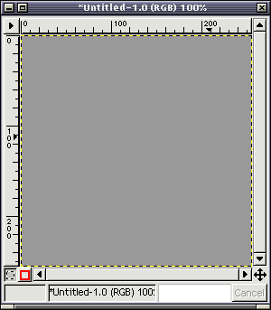
Anyway, we start off with a plain gray image.
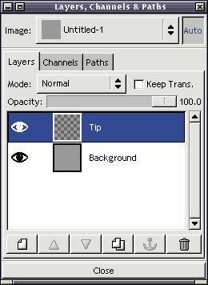
We first create a new transparent layer, and name it "tip" since we start drawing the brush from the brush tip.
Use the Bezier (Paths) tool to make a brush-shaped selection, like on the above image. This could be tricky if you are not used to the tool, so it might be helpful to check out my Bezier tool tutorials if you have trouble.
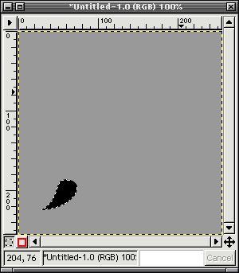
Just fill the selection with black color.
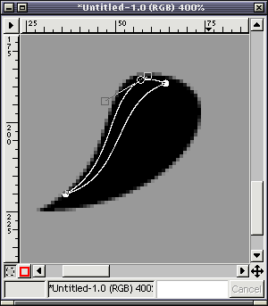
Make another bezier selection, now inside the black brush tip. Since a wet brush tip is rather shiny, we want to add a hilight too make it look realistic. Try to think where the light comes from, and make the selection accordingly.
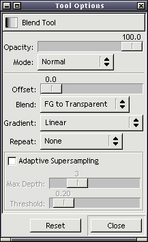
We are going to use the Blend tool (gradient fill) to make the hilight. You might want to make a new layer for the hilight so you can edit it later if you are not happy with the result.
The important thing here is to set the blend mode to "FG to Transparent", we only want to add white, not the black.
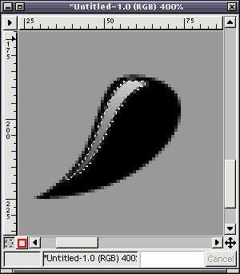
Make a blend from top to bottom, so that the white fades out towards the brush tip.
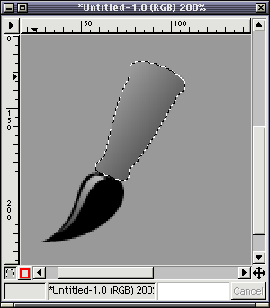
Then make another bezier selection that will form the brush metal handle, this is a bit more tricky, try to think where the brush handle will point, and add small "roundings" to the ends. Then fill the selection with a rather mid gray gradient. It does not look very real yet, but we want to bring this to life next...
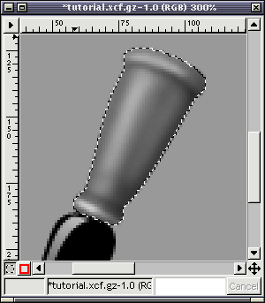
Keep the selection active still, and start adding black shadows with the airbrush tool so the shape gets some depth and looks more three-dimensional.
This takes a bit of work, start first with large fuzzy brush, and work towards finer detail by using a smaller fuzzy brush. As far as I know,
real airbrush artists use the same method to paint, they just use masking film and tape in place of the bezier selection.
Again, think how the light would reflect and how the shadows would be on a real object. And dont worry if it does not look right at first, it needs some practice and patience.
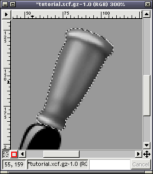
Also add some hilights by using white color on the airbrush. You can make the object appear more metal-like by adding a second hilight to
the "shadow" edge as if it was reflected from the background plane. If your background was having some color, you could add slight tint of
that color to the "second" reflection.
Again, since the metal has a pretty shiny surface, you can use the Dodge/Burn tool to make the shadows and hilights stronger. Using brighness and contrast might help too.

We add the "engraving" by painting blackwith a very small brush, airbrush again works well. Try to make it look like some letter ornament or whatever you like.
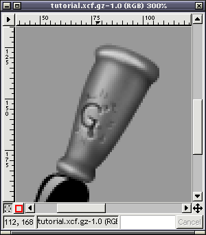
Add hilights with white color to the areas that would get reflection. Since the light comes from top left, the hilights go to bottom right of the black "engraved" shapes.
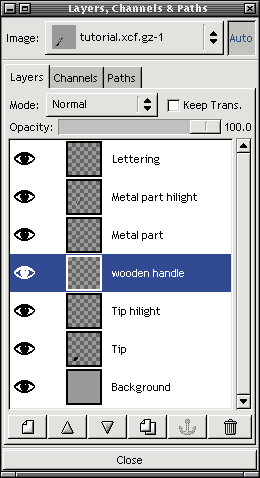
Next we want to do the rest of the handle. We again create a new layer for it. Since it comes from "inside" the metal part, it is better to put it behind the metal part layers.
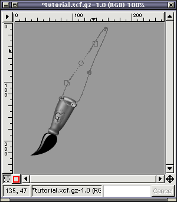
Again, the bezier selection tool. Yes, I love it. You should too. Make a nice tapered shape that represents the brush handle.
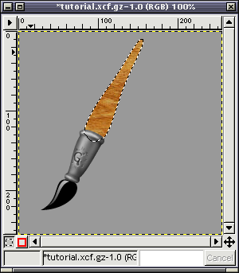
Doubleclick the "Bucket fill" tool and select "Pattern source" from the tool options window. Select one of the wooden patterns. This will make the texture of the handle. Fill the selection with the wooden pattern.
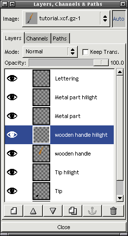
Add another layer, this time for the hilight of the wood. Position it just above the handle layer.
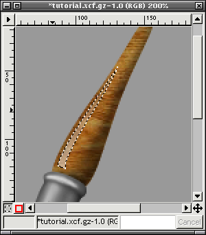
First, like you did on the "metal" part, shade the wooden handle a bit with the airbrush tool so it looks round. Then do a hilight like you did for the brush tip on steps 5-7. You might want to reduce the fill opacity a bit since the wood is quite not as shiny as the wet brush tip.
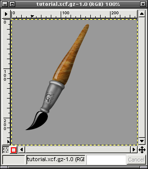
Okay, it looks very much like a brush already... Lets just add a shadow and it looks better.
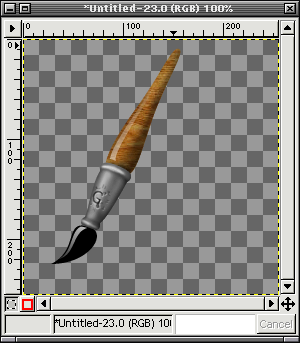
Duplicate the image, delete the background and select "Merge visible layers" to make the brush just one layer. We are going to make this copy into a drop shadow for the original brush.
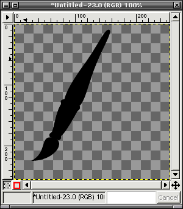
Turn on "Keep Trans" checkbox on the layers dialog, and select the whole image and fill it black with the bucket fill tool.
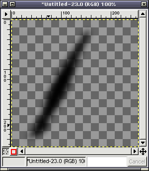
Unselect the "keep trans" and blur the layer a fair bit, I think I used something like 20 for the radius.
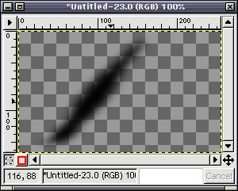
Now scale the shadow image so that it is 60% of the original height, but keep the original width. You need to click the "chain" button on the scale dialog to change the image's aspect ratio.
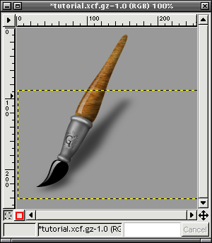
Copy the shadow image on the original brush image, and move it just above the background layer. The easiest way to copy a layer is to drag it from the layers dialog to an image.
I wanted to erase some of the shadow of the handle so it looks more realistic. I just used the eraser tool with a big fuzzy brush.
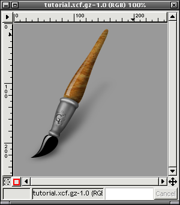
There! The finished paintbrush image. And you learned a lot about the Gimp as well.
Thank you for the interest :-)